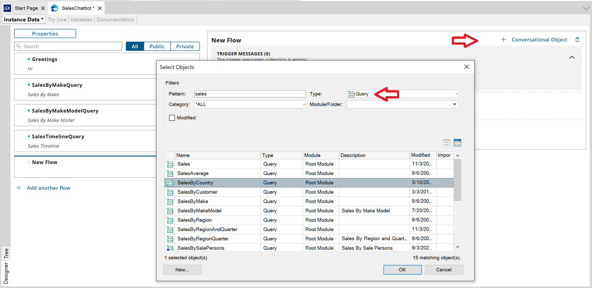
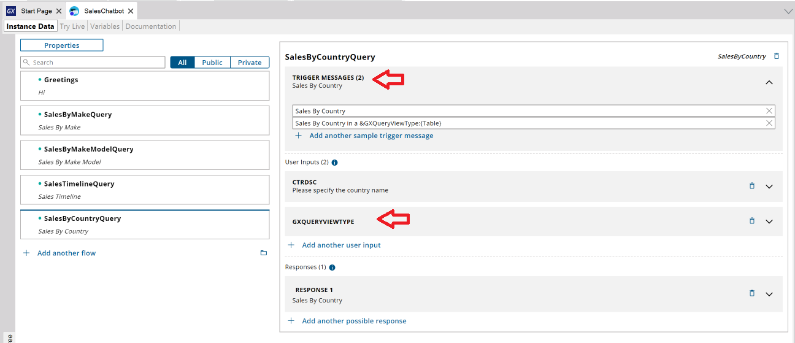
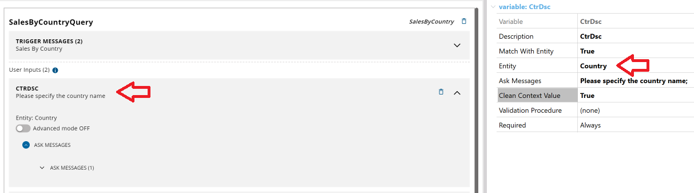
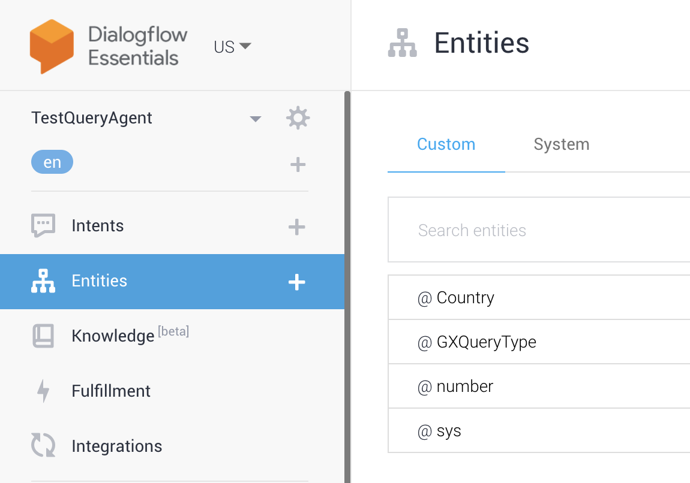
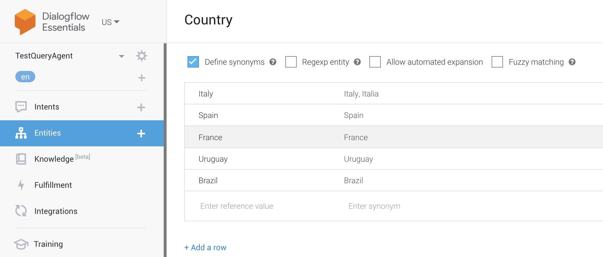
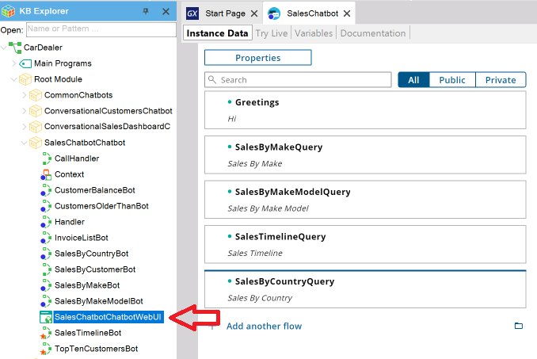
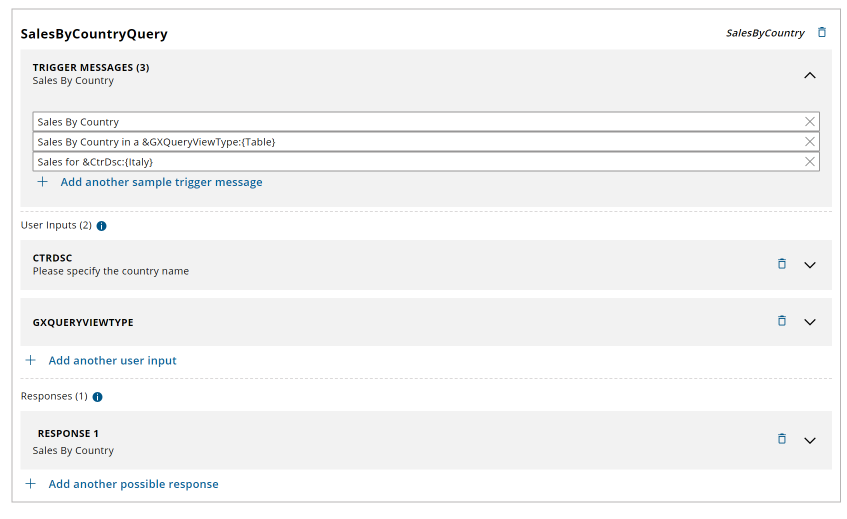
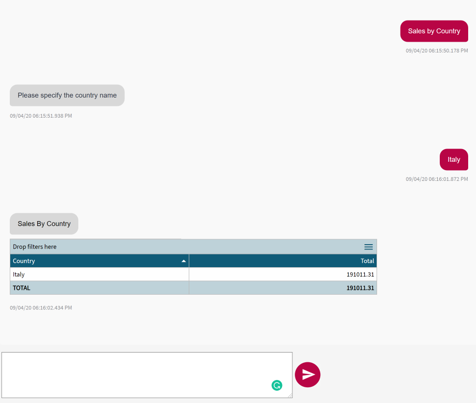
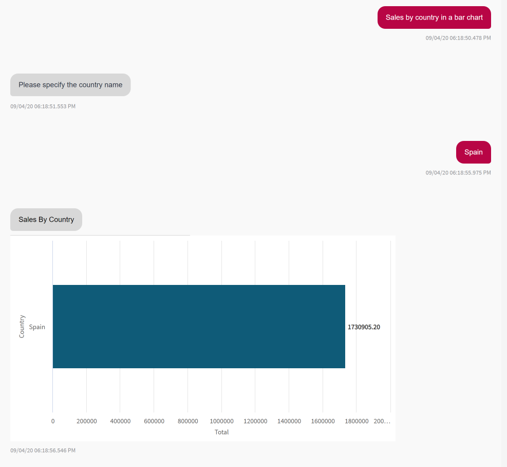

Sometimes you need to answer a question in the chatbot by presenting data with different visualization options such as charts, pivot tables, or tables. To solve this scenario, you can include query objects in your conversational flow. Before following this tutorial, reading HowTo: Build a chatbot using GeneXus is recommended. Adding a query in a Conversational FlowSelect the option to add a new Conversational Object and then select the query object you want to add.  After that, the conversational flow is initialized. In the trigger messages section, you will see one message with the query description and another message referring to the GXQueryType entity to represent the output format.
Sales By Country in a &GXQueryViewType:{Table}
&GXQueryViewType represents the input parameter that is mapped with the GXQueryType entity to set the output format, such as a bar chart, pie chart, pivot table, etc. This entity must be defined in the Chatbot agent (Watson, Dialog Flow, etc.) and to do so you can use the procedure UploadGridTypeEntity. See HowTo : Initialize entity values in the AI provider. If the query has parameters, they are all defined in the User Inputs section. Query parameters will be required; when the parameter has a specific value (Country, Brand, Category, etc.), it must be matched with an entity and the data must be uploaded to the agent (DialogFlow, Watson) in order to train the agent. For the case that the parameter is of generic type –for example, an integer– the system will detect it by itself.  Here is an example of a parameter "CTRDSC" that is mapped with an entity "Country" that you must define in your AI provider following the instructions provided in HowTo : Initialize entity values in the AI provider.  In this case, in Dialog Flow you will see the following entities:  And if you edit the Country entity, you can see or edit the values:  Following the example, you can add trigger messages with this syntax:
Sales for &CtrDsc:{Uruguay}
Where &CtrDsc represents the input parameter of the query that is used to filter the data and is mapped with the Country entity defined in the agent of your AI provider.
Executing the chatbot with queriesAfter you configure your agent provider and generate the chatbot and the application, you are ready to run your chatbot and test the interaction with the queries. In this example, the name of the conversational flow is SalesChatbot; a module was automatically generated by the chatbot generator and you can find a web panel named SalesChabotChatbotWebUI and run this one to test the interaction.  For example, for this conversational flow:  By typing "Sales by Country" you get this response. First, the chatbot prompts you to enter the country name, and after that returns the data filtered by the country you specify.  By typing "Sales by country in a bar chart" you get this response. The flow is the same as the previous example but, in this case, the output is presented in a bar chart.  AvailabilityThis feature is available since GeneXus 17. |
| Backlinks | |
| GeneXus 17 upgrade 2 | |
| HowTo: Create a chatbot using a Dashboard | Multi-experience with GeneXus 17 |